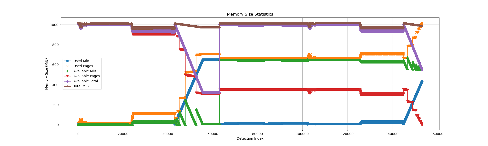

问题与解决¶
这一部分主要介绍我们开发过程中遇到的各类问题和解决方法。
内存问题¶
- 原有框架下，
iozone测试会发现写操作的内容读回来结果错误，发现是默认线性映射的问题，全都将缓冲区加载到内核态，问题解决。
//线性映射地址转换
pub const fn virt_to_phys(vaddr: VirtAddr) -> PhysAddr {
pa!(vaddr.as_usize() - PHYS_VIRT_OFFSET)
}
pub const fn phys_to_virt(paddr: PhysAddr) -> VirtAddr {
va!(paddr.as_usize() + PHYS_VIRT_OFFSET)
}
pub fn write(&mut self, buf: &[u8]) -> AxResult<usize> {
let offset = if self.is_append {
self.get_attr()?.size()
} else {
self.offset
};
//拷贝我们的OS所在的内核态，默认线性映射
let buf = buf.to_vec();
let node = self.access_node(Cap::WRITE)?;
let write_len = node.write_at(offset, &&*buf)?;
self.offset = offset + write_len as u64;
Ok(write_len)
}
-
aarch64架构下测评会发现找不到已经映射的页面，更新了依赖page_table_multiarch的正确兼容aarch64的版本后问题解决。 -
我们发现由于
Loongarch64的内存布局和其他架构不同，需要给其分配更大的内存才足够通过iozone(否则会显示内存不足)，我们对可能的原因进行了调研，结果认为有可能是因为Loongarch64架构的虚拟地址空间存在“空洞”，即部分地址不可用，这可能导致需要分配更大的内存以弥补空洞造成的内存损失。 -
在进行
libctest的过程中，内存系统会遇到内存不足，内存分配失败的情况，如下图。 - 我们调整了内存分配策略，在页不足的情况下不在申请分配上次两倍的大小，而是在内存剩余量少于一定值的情况下申请剩余大小的一定比例，成功解决了问题，如下图。
- 但是后续又发现如果在跑过一遍
musl的libctest之后再进行一次glibc的libctest，即连续进行两次libctest，还是会出现内存不足的问题，如下图。  -
可以发现当前内存系统在当前有足够
available MiB的情况下依然试图申请新的page，导致了内存不足，更换了内存分配器，把tlsf改成slab了解决了问题，如下图。 -
合并的COW代码会在栈上面分配巨大的数组，直接导致栈溢出，但内核没法发觉到这种情况，然后尝试在溢出之后写入，结果意外写入到MMIO区域里导致错误。后续通过分配到堆上面避免了在栈上创建大数组。
测例问题¶
-
测例架构支持：最早
basic测例仅仅支持x86_64架构，初始的starry-next也只支持x86_64架构，所以最开始可以通过basic测例，但我们支持了四个架构的stat系列syscall之后basic测例无法通过，后更换了测例镜像使得basic测例支持四个架构后问题解决。 -
无效测例：在调试测例
fpclassify_invalid_ld80的过程中，发现本地wsl运行此测例行为和输出结果与在实验框架下相同，但流水线测评为fail。经过沟通和确认发现此测例代码在x86_64下编译工具链会出现问题，后联系了编写测评流水线的同学进行修改，ban掉了这个测例。 -
错误测例：反馈了
busybox中不合理的kill 10测例，测例要求成功kill掉pid = 10的进程，但并未保证pid = 10的进程一定存在，后测例修改为fork一个子进程后kill父进程，测例得到修正。 -
测例工具链错误：
lua测例本身存在问题，使用musl工具链编译的lua测例在linux下也无法正确运行，在反馈后更换工具链重新编译得以修复。
测评脚本问题¶
- 测评流水线逻辑问题：在评测脚本中通过统计正确输出次数是否为4(对应4个架构)来判定测例是否通过，但如果两个测例有相同的正确输出，会导致正确输出统计量翻倍，导致错误，联系了维护测评流水线的同学进行修改，问题解决。
- 测评流水线逻辑问题：
basic测例中，评测脚本有误，评测getdents测例时将判定目录项的长度应当>=1写成了>1，导致正确实现相关系统调用后无法通过，联系了维护测评流水线的同学进行修改，问题解决。
架构设计¶
- 调用嵌套严重：初步接手
starry-next的时候有相当大一部分syscall的实现调用嵌套非常严重，有些甚至从最顶层的syscall调用到底层的真实现需要来回调用五次甚至六次，以sys_mmap这个系统调用为例。
//syscall层第一次调用
pub fn sys_mmap(
addr: UserInPtr<usize>,
length: usize,
prot: i32,
flags: i32,
fd: i32,
offset: isize,
) -> LinuxResult<isize> {
//...
aspace.map_alloc(
start_addr,
aligned_length,
permission_flags.into(),
populate,
)?;
//...
}
//第二层调用
pub fn map_alloc(
&mut self,
start: VirtAddr,
size: usize,
flags: MappingFlags,
populate: bool,
) -> AxResult {
//...
self.areas
.map(area, &mut self.pt, false)
.map_err(mapping_err_to_ax_err)?;
//...
}
//第三层调用
pub fn map(
&mut self,
area: MemoryArea<B>,
page_table: &mut B::PageTable,
unmap_overlap: bool,
) -> MappingResult {
//实际分配与映射
area.map_area(page_table)?;
//...
}
//第四层调用
pub(crate) fn map_area(&self, page_table: &mut B::PageTable) -> MappingResult {
self.backend
.map(self.start(), self.size(), self.flags, page_table)
.then_some(())
.ok_or(MappingError::BadState)
}
//第五层调用
fn map(&self, start: VirtAddr, size: usize, flags: MappingFlags, pt: &mut PageTable) -> bool {
match *self {
Self::Linear { pa_va_offset } => Self::map_linear(start, size, flags, pt, pa_va_offset),
Self::Alloc { populate } => Self::map_alloc(start, size, flags, pt, populate),
}
}
pub(crate) fn map_alloc(
start: VirtAddr,
size: usize,
flags: MappingFlags,
pt: &mut PageTable,
populate: bool,
) -> bool {
//...
if let Some(frame) = alloc_frame(true) {
if let Ok(tlb) = pt.map(addr, frame, PageSize::Size4K, flags) {
tlb.ignore(); // TLB flush on map is unnecessary, as there are no outdated mappings.
} else {
return false;
}
}
//...
}
//第六层调用
fn alloc_frame(zeroed: bool) -> Option<PhysAddr> {
let vaddr = VirtAddr::from(global_allocator().alloc_pages(1, PAGE_SIZE_4K).ok()?);
if zeroed {
unsafe { core::ptr::write_bytes(vaddr.as_mut_ptr(), 0, PAGE_SIZE_4K) };
}
let paddr = virt_to_phys(vaddr);
Some(paddr)
}
这种现象不利于后续syscall的实现，也降低了代码的可读性和可移植性，我们执行了以下的措施：
- 实现新的
syscall时，尽量严格执行接口层-实现层-Arceos底层函数的架构设计，嵌套层数限制在2~3次内。 - 对于已经实现的嵌套现象严重的
syscall进行重构，这部分工作还在进行中，最终希望可以完全去除arceos_posix_api库。